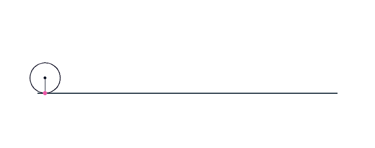
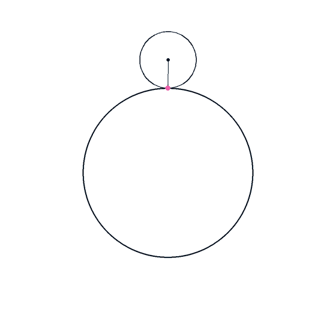
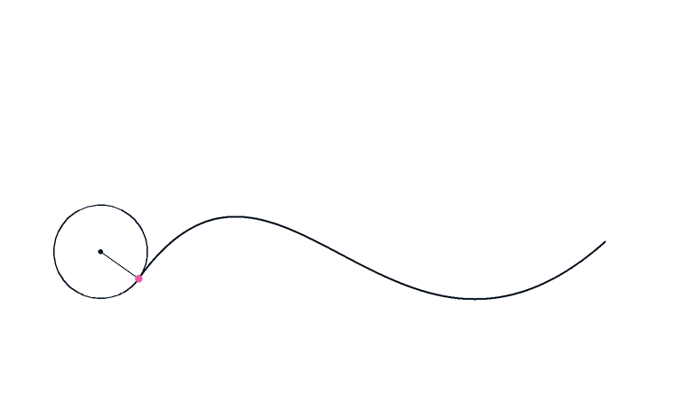
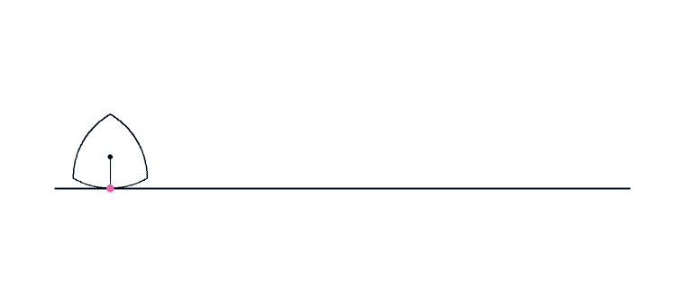
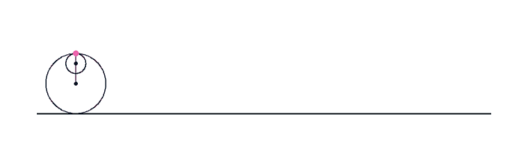
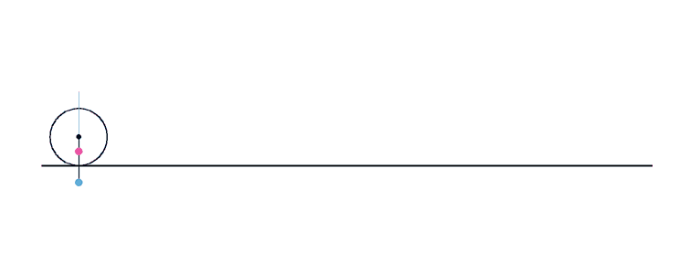
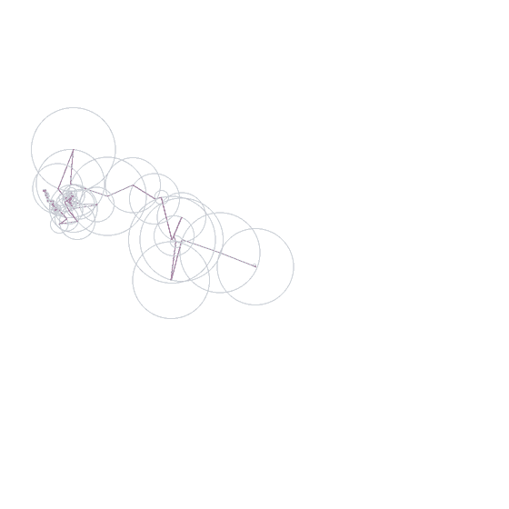

cycloids
In the eleventh grade, a lecturer in shiny pants (we liked making fun of his shiny pants) took a beat, among many beats, to talk about what happened when you trace a point on a wheel and trace its path as the wheel is rolling. This is called a cycloid, and it's one of my most favorite shapes in the world. It's just really really pretty. I don't know. Do you get it? Do you also think so?
Take a circle rolling on a flat surface, and you get a cute little scallop.

What if it's rolling on a curved surface? Like, say, another circle?

Or a Bezier curve?

What if the wheel isn't a circle? Like, say, a Reuleaux triangle?

Let's go back to the circles: what if you nested them? Put a cycloid on a cycloid, so to speak?

What if you picked a point to trace that wasn't on the edge of the circle?1

This structure-creating-path pattern is everywhere when you know where and how to look. Really complex things come out of really simple things.

Sometimes, as with simple cycloids, it's really clear what the generator is – which two simple structures interacted, and how, to form the complex structure. At times like these, you want to point to the simple structures and say, this is upstream in some important way. The complexity comes from somewhere.
Other times, it's less clear.
When we look at Homer's face, does it seem fair to say that the generating idea of what we're looking at is a collection of interacting circles?
When you put very simple, general concepts together, and organize them into a framework of interactions, you can often do many, many more things with them than you expect to be able to do at the outset.
This is the kind of scenario for which people write maxims like Occam's razor. Why, one might say, should we suspect that the simplest explanation is often the most correct? Why, for that matter, is it a suspicion, and not a mere truth-claim?
Situations like epicycle-Homer are a good answer to the first question. Epicycle-Homer is why "epicycle" is a shorthand for the code smell that a reasoner gets from explanations that presume too many details.
But the second question is a little harder to think about. In the universe of the example, it's the question, why is epicycle-Homer possible?
How did we end up writing a system that could cause Homer using just 350 compasses?
Here we can notice two things:
- 350 compasses is a lot of compasses.
- 350 compasses can be used to draw many pictures. Something further is needed to select among those many pictures for Homer.

What is that something further?
Let's take another look at Ptolemy's model of the spheres.2
We might begin by noting the various symmetries. Homer-generator takes quite a few rotations around the pivot before you get Homer. We might look at the "petals" of the paths: Venus has exactly five. Come to think of it, they all have an integer number of these. Why?
Well. Because it's a path drawn by a wheel rolling on a larger circle. Well, to be precise, it's a path drawn by a point outside the wheel, as the wheel rolls on the big circle. A trochoid!
The distance covered by one turn is going to be a ratio of the radiuses of the circles.3
\(\frac{2\pi a}{2\pi b} = \frac{a}{b} \)
So the path will close every \(b\) times it goes around the center.
Notice also that a "petal", as we've been calling them, only happens when a planet is traveling backwards on the wheel faster than it travels forward on the circle. So the count of petals \(a\) gives you how many extra times it goes around the wheel for every time it goes around the circle: i.e. how many extra epicycles per cycle.4
For each path, you have a different \(a\) and \(b\), and you can find them by counting. Venus winds around the earth 8 times, and in that time the wheel rotates 5 extra times. 8+5 = 13 epicycles per 8 cycles.
How long does this take, relative to, say, Jupiter?5
Well, this diagram won't show us. They kept that in the logs. In the spreadsheets, if you will, and very good spreadsheets they were, too.
Looking up at the heavens is a real rat's nest of factors, isn't it? A ridiculous amount of bookkeeping to do over centuries and centuries to figure out that something like this is happening. Decades to notice any error. By the time you have a diagram like this, something almost right, almost true, it legitimately hurts to change it.
There were errors. Planets almost repeat their exact paths far more often than they do repeat them. The ratios of the radii declined to be rational in practice; but every number is almost rational, and so on a thin enough time slice – in a blink of an eye on a cosmic scale, say – any such path will look almost periodic. When Venus arrives in the sky at its brightest, almost exactly where you said it would, 2.5 days late – well, it keeps you up at night. But it was doing that anyway. You try to update what you have, by small steps. You don't try to turn it all over.
Enough with the staring at primitive representation tools. We can't tell time with a static image, and our human brains would much prefer not to have to tell time from a table. So I'm not going to give you one; let's fix the picture instead.


There. Now we have the periods.
Wait. Notice something strange?


There: Every cycle of Mercury, Venus, and the Sun lines up – and every period of Jupiter's, Saturn's, and Mars' epicycles lines up with them.
In the parlance, you would call the periods of the cycles and epicycles free parameters. Nothing in the picture that we've built so far constrains them to behave this way. So why aren't these free parameters, well, free?
Even once you have your beautiful generators, and the patterns they make, this is the smell you go looking for, the thing that will actually force an update: a regularity that you didn't put there.
Regularities like this are redundant information. Maybe, you must now think, there is a way to reduce the redundancy: to say once what now appears to be said five times over.
And now, now, we can ask the simplest question, the one you already know the answer to:
Why is the Sun's orbit a circle?


Lo: a Euclidean parable.
Things I wish I could add to this post, or make another post about
–which, fortunately, I can just put here as a note for later, because I run a goddamn garden, not a stream. I'm going to start adding these to everything so I can get anything ever done around here.
- What must it have been like to be a Greek geometer using these tools to trace out the path of Mercury? How would you go about telling them about Homer Simpson?
- I want to play a game of chronophone. Can I tell Ptolemy about the Fourier transform?What would be equivalent surprisal?
- I think there's a way to leverage an invariant to write a class of winning strategies for chronophone. Roughly it goes like this: If you find a reasoning tool that your interlocutor could also use, that if you were to use would generate equivalently surprising insights to you, then you can induce them to use it the way you're using it. This is sort of an argument from proof identity that I'm doing here.
- The thing I'm playing with here, trying to think through carefully, is how concepts work; how concepts compose and decompose, factor models into something we can call information. There's a very strange cognitive thing happening where Ptolemy would not have needed to argue from a number like the period – annotation to the diagram – if he had access to the animation. He could have just seen it.
- By analogy, I don't think we have a good way yet to imagine how compression works. We have to argue from number.
- I wish I could have spent the time to play around with writing these animations myself. Unfortunately that would have meant it would have taken me a week at least. Alas, for the relative speeds of coding and writing: I'm not that kind of wizard.
- I still want to make every animation a slider. It would be cute, and help illustrate a sub-point I'm making in here about tools. Also they need to be SVGs, and are not at time of publishing.
Footnotes:
This is called a trochoid. 
Well, Cassini's plot that derives from Ptolemy's model fo the spheres.]why extra epicycles? This is left as an exercise for the reader.
But watch out! Recall that the planet is somewhere outside the wheel, not on it. Recall:
why extra epicycles? Exercise for the reader.
This is what makes the planets not be Homer, by the way. Time.